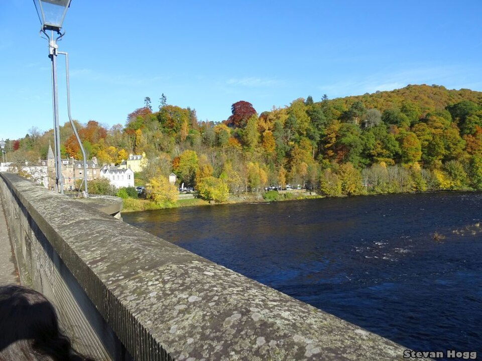
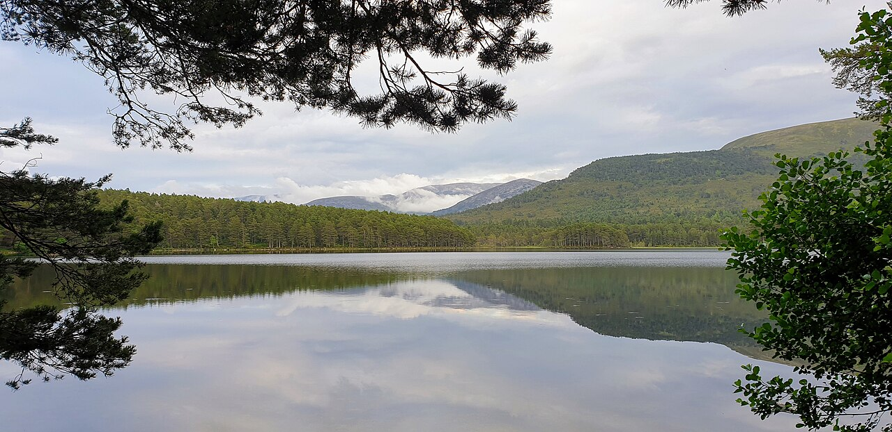
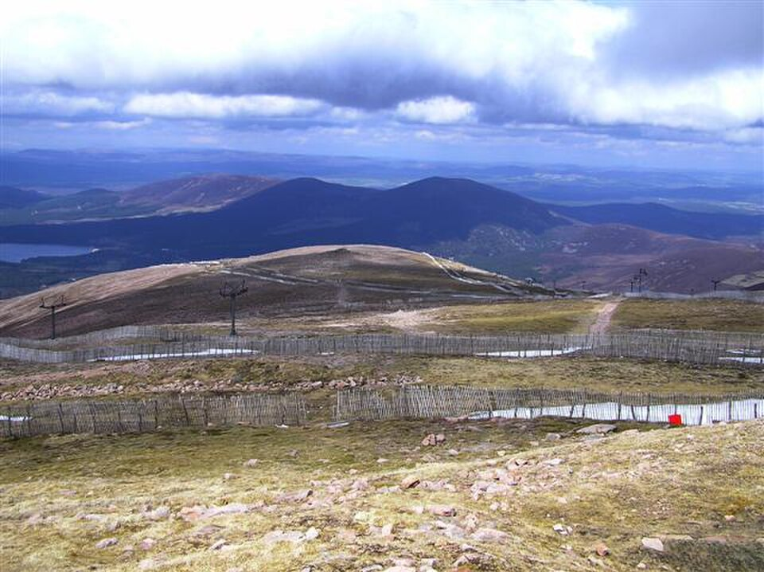

Arthur's Seat
Edinburgh, Scotland
5 km
2 hrs
Easy
Find a hike that suits you
Edinburgh, Scotland
Loch Lomond, Scotland

Dunkeld, Scotland

Cairngorms, Scotland

Cairngorms, Scotland
No hikes found. Try a different search or difficulty.